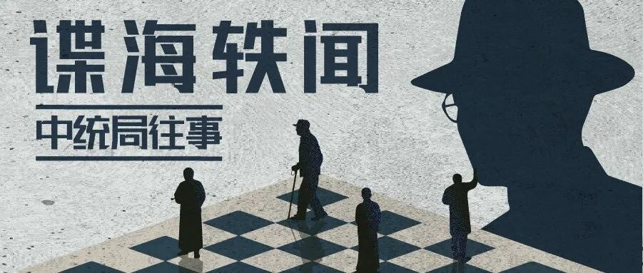
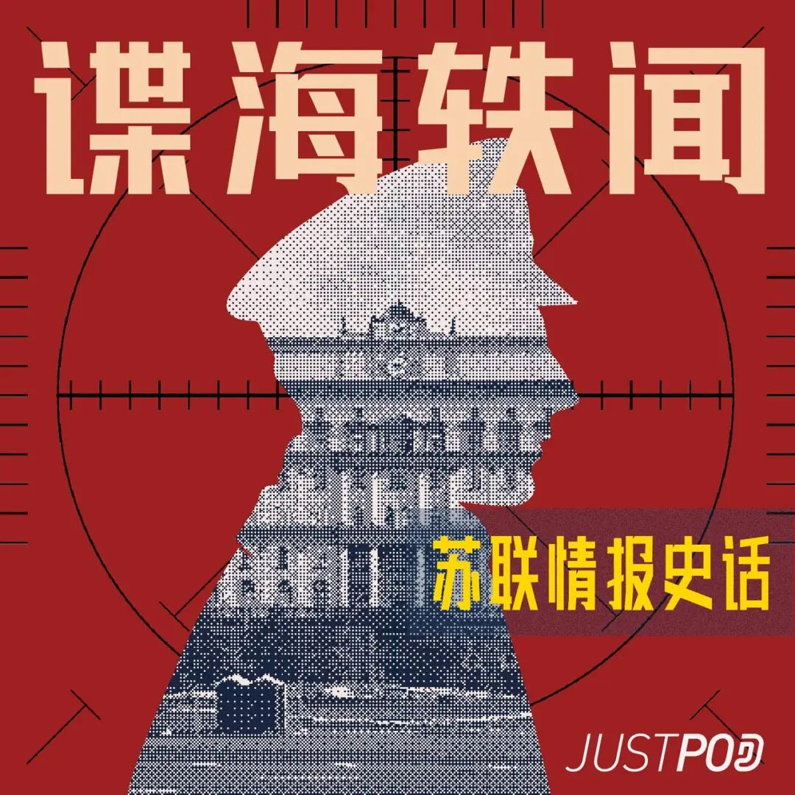
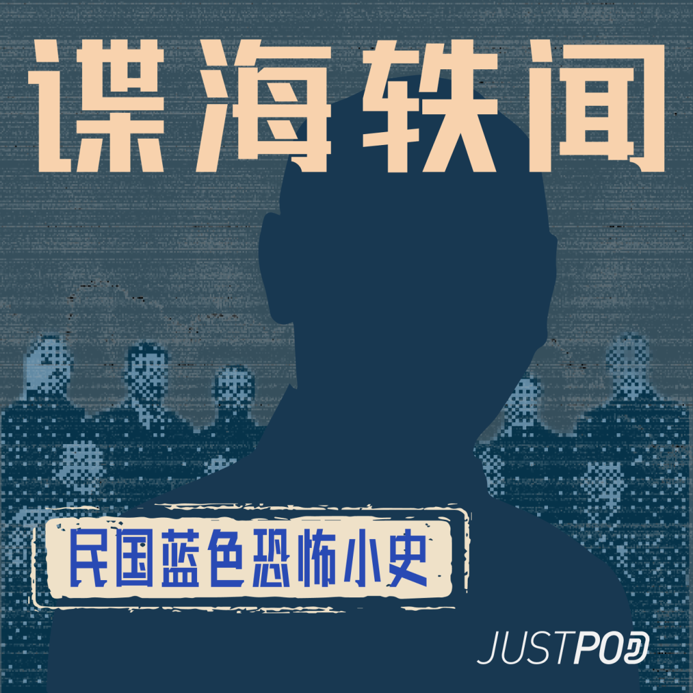
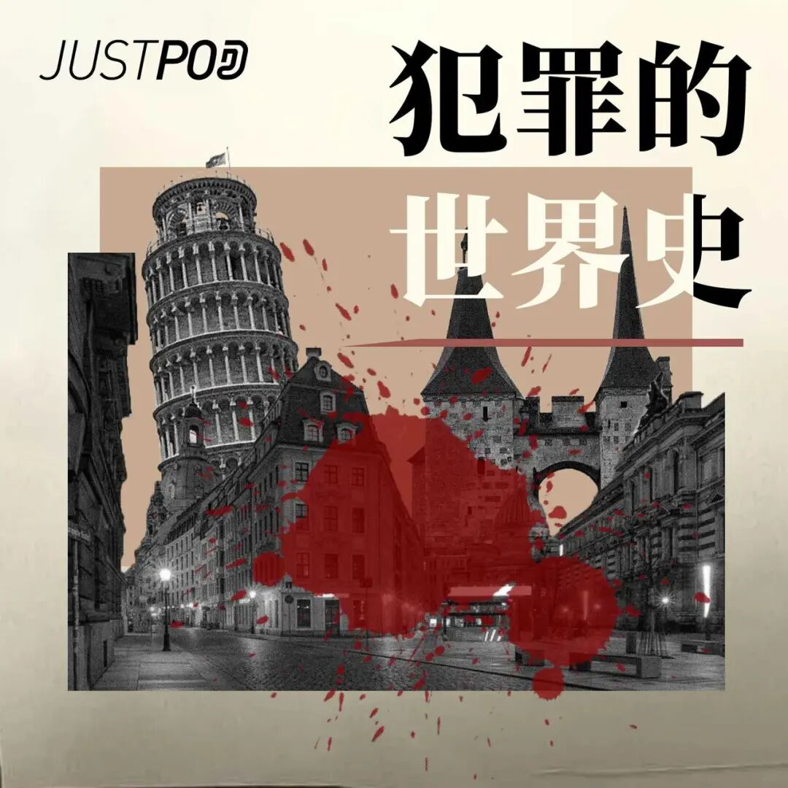

中统局往事03｜从炮制「伍豪事件」、与朱家骅斗法到章亚若命案疑云


本期介绍
从伪造「伍豪启事」的离间计，到中统内部朱家骅与徐恩曾的权力之争，再到蒋经国情人章亚若的离奇死亡事件，中统如何在国共谍战、党内权斗、家族丑闻之间游走？徐恩曾、顾建中、张冲等关键人物，又如何在这架政治机器中施展权谋、沾血谋位？戴笠与徐恩曾两大特务巨头，如何从暗战走向彻底决裂？请听郑诗亮带来的精彩分享！
本期试听
本期为全新付费播客系列《谍海轶闻｜中统局往事》第三集，以上音频为试听版本，完整内容欢迎下拉至文章末尾扫描二维码解锁收听。
本期提到
陈立夫 / 徐恩曾 / 顾顺章 / 向忠发 / 牛兰 / 李一氓 / 潘汉年 / 邓发 / 朱家骅 / 贺耀祖 / 戴笠 / 丁默邨 / 吴铁城 / 陈介生 / 顾建中 / 郭紫峻 / 叶秀峰 / 蒋经国 / 章亚若 / 蒋方良 / 蒋孝严 / 蒋孝慈 / 王升 / 曹聚仁 / 黄中美 / 陈诚 / 孔祥熙 / 赵理君 / 韦孝儒 / 潘公展 / 沈之岳 / 李士群
《模糊的荧屏》
时间轴
正片开始
「伍豪声明」的幕后插曲：九一八事变后的舆论转移报道
亲德派朱家骅入局中统
陈介生事件：徐恩曾动用行动队武装接管特种经济调查处
朱家骅引入郭子俊，开启中统内部的「一局三公」大乱斗
「名侦探」顾建中：孙凤鸣刺汪案的破案能手
蒋经国的苏联往事：尼古拉蒋与他的同学们
章亚若事件：「太子」情人的离奇死亡
上将王升的命运：从照顾私生子到放逐巴拉圭
顾建中杀人疑云：是黄中美还是陈立夫授意？
中统VS军统：从合作到决裂
戴笠的反击：查走私、抓贪污、送徐恩曾「永不叙用」 本期嘉宾 郑诗亮，文史研究者 程衍樑（微博@GrenadierGuard2）
解锁全部内容
由于平台之间不互通，所以您需要根据自己的收听习惯选择平台购买，下方二维码可直达小宇宙app或微信公众号，享受优惠价一次性购齐整季六期，网易云音乐与喜马拉雅目前仅支持单集付费。

👂🏻
文稿、排版：Yo编辑：思钊


中统局往事02｜1931年国共情报战：徐恩曾、顾顺章与上海生死斗





